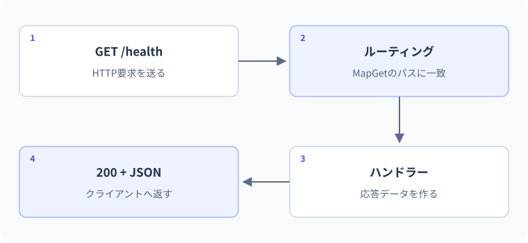

29 ASP.NET Coreの最小API — 詳細解説
Minimal APIの要求経路。
ここからはHTTPを受け取る側を作ります。アプリ起動時に登録する処理と、要求が届くたびに実行される処理を分け、URLの値が引数へ渡るまでを追います。
HTTPリクエストを受け取るAPI
前のレッスンではHttpClientから要求を送りました。ASP.NET Coreは、HTTP要求を受け取り、経路を選び、入力を型へ変換し、結果を応答へ変えるWebアプリケーションの仕組みを提供します。Minimal APIは、必要な経路と処理を比較的少ない構造から記述できる方式です。少ないコードで書けることと、入力検証や運用の設計が不要になることは別です。
エンドポイントは、ある経路とHTTPメソッドに対応する処理の窓口です。ルーティングは要求を適切なエンドポイントへ対応付ける処理、ハンドラーは選ばれた後に実行する処理です。ミドルウェアは要求・応答の途中に挟まる共通処理です。例外処理、認証、ログなどを流れの途中へ配置できます。
最小APIの完全なProgram.cs
このコードはコンソール用ではなく、Microsoft.NET.Sdk.Webを使うWebプロジェクトへ置きます。起動中はHTTP要求を待つため、自動で終了するコンソール例とは違います。
var builder = WebApplication.CreateBuilder(args);
var app = builder.Build();
app.MapGet("/hello", () => Results.Ok(new { message = "Hello, C#" }));
app.Run();匿名型new { message = ... }は、名前付きの専用classを宣言せず、その場で読み取り用のプロパティをまとめる構文です。この例では応答用の小さなデータを表しています。繰り返し使う契約なら名前付きの型にすると管理しやすくなります。
dotnet new web -n HelloApi -f net10.0
cd HelloApi生成されたProgram.csを上のコードへ置き換え、保存してから次を使います。
dotnet build
dotnet run --no-launch-profile -- --urls http://127.0.0.1:5080127.0.0.1は同じ端末を表すループバックアドレスです。5080はポート番号で、同じ端末のどの待受先へ送るかを区別します。この練習は端末内のHTTPに限定し、秘密情報を送らず、外部公開しません。公開環境ではHTTPS、認証、権限、ネットワーク構成などを別途整備します。
起動時とリクエスト時を分ける
MapGetの呼び出し時に、ラムダ式の処理が実行されるわけではありません。「GET /helloが来たら、この処理を呼ぶ」という登録をしています。app.Runでアプリを動かし、要求が来たときに登録したハンドラーが呼ばれます。
| 時点 | 実行するもの | まだ実行しないもの |
|---|---|---|
| CreateBuilder | 既定設定やサービス登録の準備 | /helloの応答作成 |
| Build | アプリの実行基盤を組み立てる | 各利用者への個別処理 |
| MapGet | 経路とハンドラーを対応付ける | 登録したラムダ式の本体 |
| Run | サーバーを起動して待つ | 要求がない経路の処理 |
| GET /hello受信 | 対応するハンドラーを実行 | 無関係な経路の処理 |
- 1起動時
設定読込 → アプリ構築 → 経路登録 → 待受
- 2要求到着
GET /hello
- 3ルーティング
GETと/helloに合う登録を選ぶ
- 4ハンドラー
messageを持つ応答用オブジェクトを作る
- 5応答作成
200とJSON本文を返す
期待するHTTP応答は200と{"message":"Hello, C#"}です。通常の起動ログも端末に表示されますが、具体的な時刻や全ログ行は環境で変わります。このページは静的教材であり、ここに記載されたC#サーバーをブラウザー内で起動しているわけではありません。
本文の実例との対応：Minimal APIの要求経路
次の図は本文の実例「稼働確認APIと商品取得API」を使った補助例です。この節のコードとは変数や入力値が異なるため、処理の対応に注目します。

ルートの値を引数へ受け取る
var builder = WebApplication.CreateBuilder(args);
var app = builder.Build();
app.MapGet("/items/{id:int}", (int id) =>
{
return Results.Ok(new Item(id, $"Item-{id}"));
});
app.Run();
public record Item(int Id, string Name);GET /items/3の期待応答は200と{"id":3,"name":"Item-3"}です。{id:int}は整数として扱える経路部分をidという名前で受け取るルート制約です。idに3が入り、ハンドラーで応答を作ります。実際の保存データを検索しているわけではないので、このサンプルではどの整数でも生成した結果を返します。
GET /items/abcは、この整数制約付き経路に一致しないため通常404です。入力検証のために「どんな不正入力でも400」と決めつけないでください。経路に合うか、引数変換できるか、業務上有効かは別の段階です。
要求を受け取ってから処理へ進む順を分けます。入力の位置と型をそろえておくと、失敗した段階を調べやすくなります。
- クライアントAPIの経路
- APIの経路ハンドラー
- ハンドラークライアント
ルートに一致しない場合と、ハンドラーが実行されて対象なしを返す場合は別経路です。ステータスだけでなく、どこまで処理が進んだかも確認します。
クエリと本文は別の場所にある
GET /items?limit=5のlimitはクエリ、POST /itemsのJSONは本文です。Minimal APIは引数の型や名前などから入力元を判断する規則を持ち、属性で明示することもできます。バインディングとは、要求のデータを引数の型へ結び付けて値を作る処理です。
var builder = WebApplication.CreateBuilder(args);
var app = builder.Build();
app.MapGet("/greet", (string? name) =>
{
string label = string.IsNullOrWhiteSpace(name) ? "Guest" : name.Trim();
return Results.Ok(new { message = $"Hello, {label}" });
});
app.Run();GET /greet?name=ZakiならHello, Zaki、GET /greetならHello, Guestを含むJSONが期待されます。string?で省略を扱い、nullと空白を一つの規則にしています。これは利用者名を保存する本番の検証仕様ではなく、入力元と処理順を学ぶ例です。
間違い：クエリとルートの位置を取り違える
/items/{id:int}だけを登録しているAPIへ、/items?id=3を送っても同じ経路にはなりません。前者はパス/items/3、後者はパス/itemsにクエリid=3が付いた要求です。確認するのはURL全体だけでなく、パスとクエリを分けた値です。
修正は、呼び出す側を/items/3にするか、APIの契約として/items?id=3を受ける別の経路を明示的に設計することです。C#のint変換を修正しても、そもそも経路が選ばれていなければ解決しません。
idを経路から受け取る設計と、クエリから受け取る設計を別々に読みます。
/lessons/{id:int}呼び出し例 /lessons/3
/lessons とidのクエリ呼び出し例 /lessons?id=3
型が同じintでも、どこから値を取るかという契約は異なります。明示的なバインディング属性を使う場合も、APIの仕様と一致させます。
共有メモリとリクエストごとの値
ハンドラーの引数やローカル変数は、各呼び出しの処理として使います。一方、起動時に作ってハンドラーが参照しているListや、Singletonとして登録したオブジェクトは複数リクエストで共有され得ます。複数の要求は同時に処理される可能性があります。
Listへの追加・削除を無制限に同時実行したり、件数からIDを作ったりする設計は安全ではありません。読み取り専用の固定データから始め、変更を導入する段階で共有範囲と同期を設計します。次のレッスンのメモリ保存例では、ロックする範囲を明示します。データベースへ置き換える場合には、その保存方式に合った整合性の管理が必要です。
起動時に作った一覧などを複数のハンドラーで使う場合の参照関係です。
複数要求から利用する同じ実体矢印は参照関係を表します。物理的なメモリ位置やアドレスの図ではありません。
リクエストごとのローカル変数まで共有されるわけではありません。一方で、同じ実体へ同時にアクセスするなら、その実体の更新方法を安全に設計する必要があります。
境界・比較例：ルートとは別の検索処理
検索のルールだけならコンソールでも検査できます。HTTPルートやステータスの検証は、APIを起動した統合テストで別に行います。
Console.WriteLine(FindName(1) ?? "見つかりません");
Console.WriteLine(FindName(9) ?? "見つかりません");
static string? FindName(int id) => id == 1 ? "Notebook" : null;想定出力
Notebook
見つかりません経路の契約を表にする
| 項目 | /hello | /items/{id:int} |
|---|---|---|
| メソッド | GET | GET |
| 入力 | なし | パスの整数id |
| 成功 | 200とmessage | 200とItem |
| 対象の取得方法 | 固定文字列 | この例では値を生成 |
| 制約 | 説明用 | 保存検索・存在検証は次の段階 |
この表があると、「作成したIDだけ取得できるAPI」なのか「整数から結果を生成するAPI」なのかを取り違えにくくなります。コードが短くても、外から見た振る舞いは明確にします。
3段階の練習
基礎：/helloのmessageを変更し、同じGETで新しいJSONが返ることを手元で確認します。変更後は保存と再起動または開発用更新の反映を確認してください。教材の下書き保存だけではサーバーは変わりません。
標準：/double/{value:int}を作り、valueを2倍した結果を返します。極端なintであふれないよう、(long)value * 2を使う解答が考えられます。変換を掛け算より前に行う知識が第3レッスンからつながります。
応用：存在するIDだけを返す読み取り専用の一覧を用意し、なければ404にします。固定配列をLINQのFirstOrDefaultなどで調べ、nullを先に判断します。入力が経路に一致しない404と、経路は一致したが対象がない404を処理の段階として説明してください。
公式資料
確認日：2026年9月14日。本文の理解を補うための資料です。学習対象は.NET 10 / C# 14です。パッチ番号は固定しません。